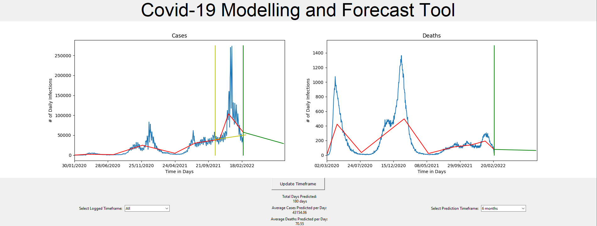

Covid-19 Prediction Model
This project is a program that predicts the future number of Covid-19 cases and deaths. This was done as a group project with 3 people. I was responsible for implementing the linear regression and GUI. Git and Jira were used to implement an agile development methodology.
The program reads unaltered csv files from https://coronavirus.data.gov.uk/details/download and applies piecewise linear regression to the cases and deaths data. The real data and predicted data is plotted on a graph and displayed to the user. The user can adjust how long to predict for.
3rd party libraries used include Numpy, Pandas, Matplotlib, and Tkinter.